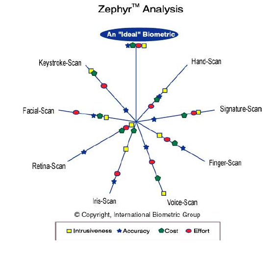

Introduction*
La biométrie est une technique globale visant à établir l'identité d'une personne en mesurant une de ses caractéristiques physiques. Il peut y avoir plusieurs types de caractéristiques physiques, les unes plus fiables que d'autres, mais toutes doivent être infalsifiables et uniques pour pouvoir être représentatives d'un et un seul individu. D'autre part, comme nous allons le voir, les caractéristiques physiques sont loin d'être si parfaites et si précises, et l'on atteint très vite des limites pour ces techniques.
Voici à titre indicatif le résultat d'une étude effectuée par une compagnie américaine, l'International Biometric Group (a New York based intégration and consulting firm), présentant les différents critères pour chaque type de technique biométrique :

Légende :
Effort : effort requis pour l'utilisateur lors de la mesure.
Intrusiveness : décrit dans quelle mesure l'utilisateur perçoit le test comme intrusif.
Cost : coût de la technologie (lecteurs, capteurs, etc...)
Accuracy : efficacité de la méthode (capacité à identifier quelqu'un)
Il existe plusieurs autres techniques en cours de développement à l'heure actuelle; parmi celles-ci, citons la biométrie basée sur la géométrie de l'oreille, les odeurs, les pores de la peau et les tests ADN. Sur ce dernier point, il est intéressant de souligner que le procédé peut se révéler menaçant tant
au niveau de la vie privée des personnes, de leur liberté que des dérives informatiques éventuelles (et autres Big Brothers). En effet, même si cela dépend de la technique mise en oeuvre, le test ADN est quelque chose qui peut se révéler comme exact et sûr à 100%.
Parmi toutes ces techniques, c’est celle de la reconnaissance par empreinte digitale qui a été retenue dans notre système. Voici en quelques lignes le principe.
Empreintes digitales (finger-scan): la donnée de base dans le cas des empreintes digitales est le
dessin représenté par les crêtes et sillons de l'épiderme. Ce dessin est unique et différent pour chaque individu. En pratique, il est quasiment impossible
d'utiliser toutes les informations fournies par ce dessin (car trop nombreuses pour chaque individu), on préférera donc en extraire les caractéristiques
principales telles que les bifurcations de crêtes, les "îles", les lignes qui disparaissent, etc...
Une empreinte complète contient en moyenne une centaine de ces points caractéristiques (les "minuties"). Si l'on considère la zone réellement
scannée, on peut extraire environ 40 de ces points.
Pourtant, là encore, les produits proposés sur le marché ne se basent que sur une quinzaine de ces points (12 au minimum vis-à-vis de la loi), voire moins pour beaucoup d'entre eux (jusqu'à 8 minimum). Pour l'histoire, le nombre 12 provient de la règle des 12 points selon laquelle il est statistiquement impossible de trouver 2 individus présentant les mêmes 12 points caractéristiques, même en considérant une population de plusieurs dizaines de millions de personnes.
Created with the Personal Edition of HelpNDoc: Easily create Web Help sites